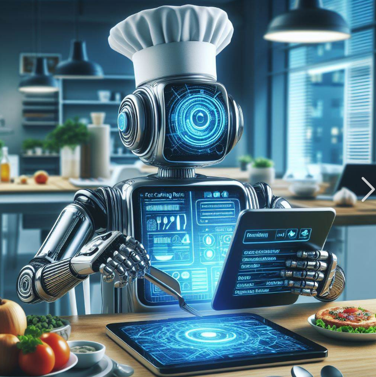

Welcome to My Cooking Partner
At "My Chef," we're at the forefront of a culinary revolution, blending the art of fine dining with the precision and efficiency of technology. As a pioneering robotic cooking firm, we harness the power of advanced robotics and AI to prepare an array of exquisite dishes, ensuring consistency, speed, and unparalleled quality in every bite.
